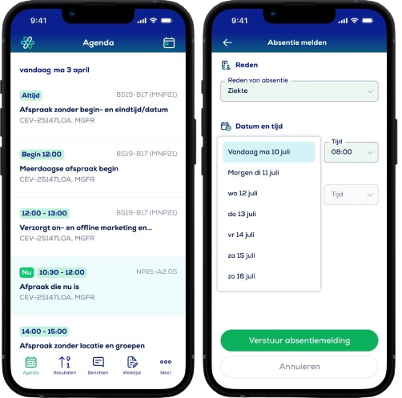

Eduarte is een studenteninformatiesysteem voor meer dan 300.000 mbo-studenten.
Het systeem zorgt ervoor dat onderwijsinstellingen hun administratie goed op orde hebben en dat de informatievoorziening voor studenten,
docenten en het management vlekkeloos verloopt.
EduArte Rooster
Met Eduarte kunnen we ons lesrooster zien, welke les we vandaag of volgende week hebben, hiermee kunnen we ook realtime zien of de les wijzigt of dat er een les is geannuleerd. We kunnen ook ziek melden in de Eduarte app,
maar alleen als je ouder bent dan 18 jaar. Als je jonger bent dan 18 jaar moeten de ouders de school bellen om ziek te melden.

EduArte Examen en Toetsen Cijfers
Met Eduarte kunt u ook de resultaten van uw examens en toetsen bekijken. Door op de knop resultaten te klikken kunt u vervolgens de cijfers van zowel uw toetsen als examens bekijken.
Dit is een leuk functie waarmee u uw resultaten kunt zien zodra ze openbaar worden gemaakt.